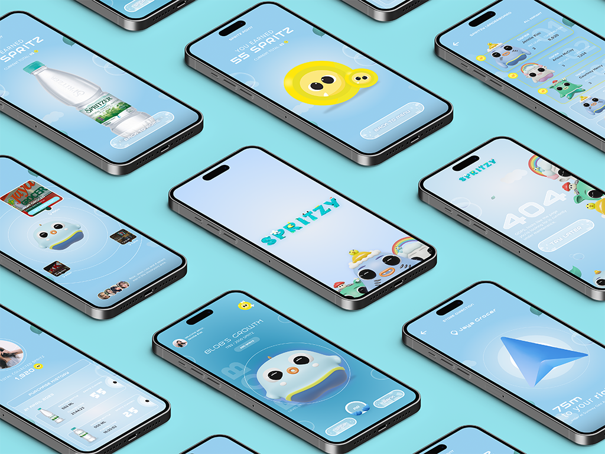
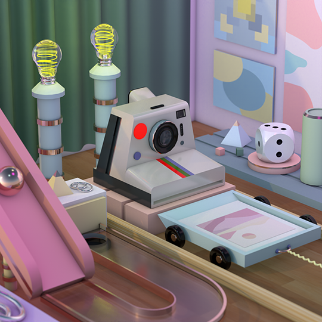
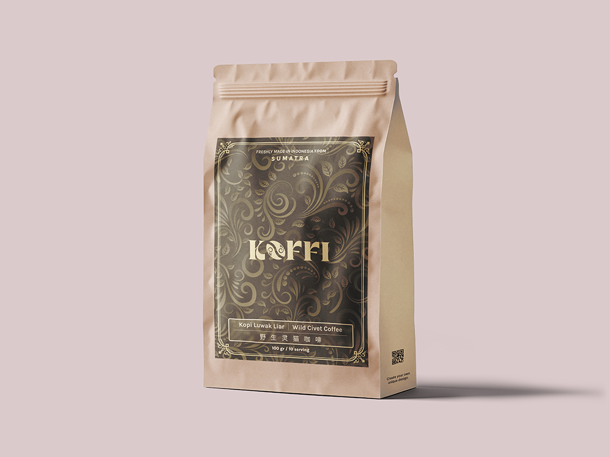
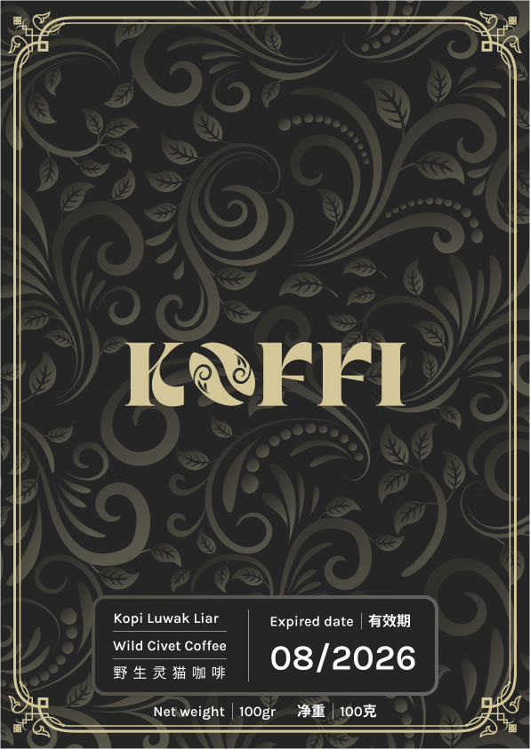
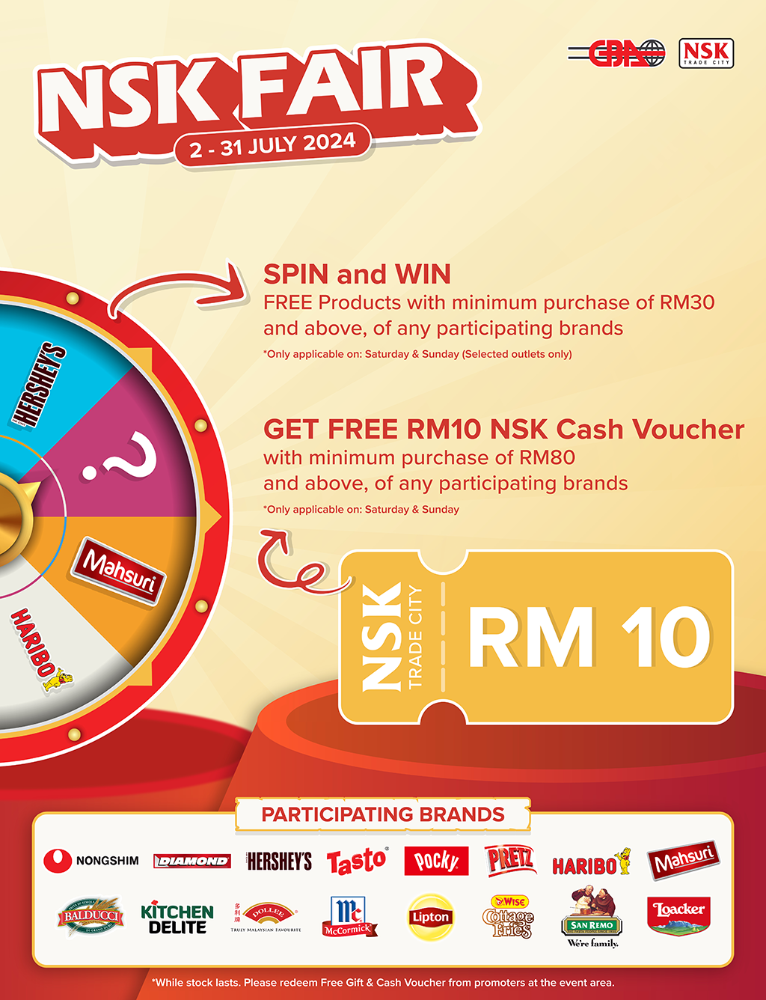
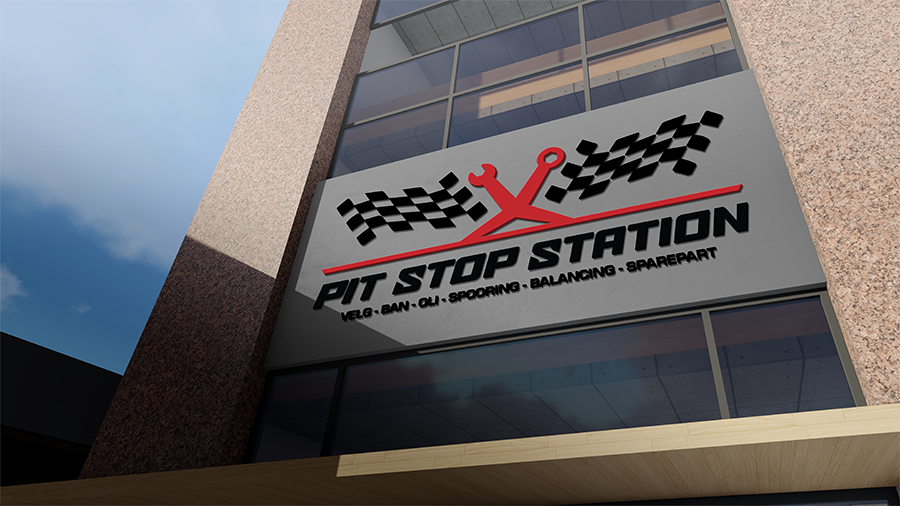
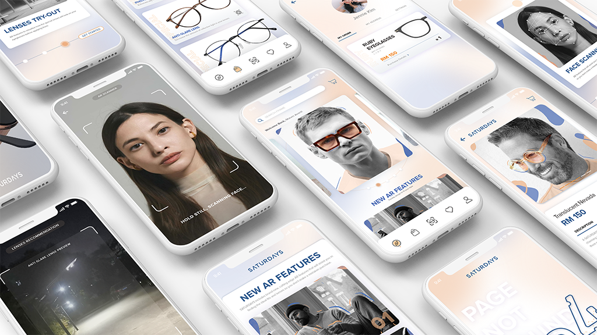

Sphere — Rethinking ad creation end-to-end
A full-scale marketing platform that replaces five fragmented tools with a single, production-ready workspace for planning, creating, and shipping ads.
The project focused on consolidating the entire campaign lifecycle — from brief to approval to launch — into one continuous creative surface inside the 123RF ecosystem.
My Role
Product Designer (UI/UX)
Responsible for:
- UX strategy and workflow design
- Campaign hub and modular canvas system
- Asset search and stock integration
- Approval and review experience
- Design system and handoff playbook
- Cross-team alignment with engineering
- Responsive web experience
Goals
The project focused on building a marketing workspace that felt:
- Faster to move through
- Easier to collaborate inside
- More aligned with how teams actually work
- Scalable for future ad formats
- Connected from brief to launch
The goal was not only to replace existing tools, but to remove the handoffs between them.
Background
Sphere is 123RF's next-generation marketing workspace, built to consolidate planning, asset search, design, and approval into one production-ready surface.
Previously, marketers moved across five tools to ship a single ad — briefing in docs, searching stock separately, designing elsewhere, then routing approvals through chat. Sphere unifies that lifecycle into one continuous flow.
The platform includes:
- Campaign hub
- Modular canvas editor
- Inline asset search
- Contextual approval threads
- Export and launch pipeline
- Team and brand library
Problem
Marketers were switching between brief docs, stock search, design tools, and approval workflows — often rebuilding the same ad in three places.
Common pain points:
- Briefs lived outside the design tool
- Stock and assets required separate searches
- Approvals happened in chat, not in context
- Version history scattered across surfaces
- No single source of truth per campaign
Average turnaround for a single campaign stretched past ten working days.
Before vs After
Solution
Instead of building yet another editor, I focused on designing a single workspace that absorbs every step of the ad-making process.
Marketers can:
- Brief and ideate
- Search and place stock assets
- Design and iterate
- Route approvals in context
- Export and ship
Key design directions included:
- Campaign-first information architecture
- Modular canvas that adapts to ad format
- Inline asset search
- Threaded approvals on the artwork
- Scalable layouts for future tools
One workspace, one source of truth — from brief to shipped ad.
Discovery
Interviewed nine marketing teams across SMB and enterprise to map the real flow of how campaigns actually get made today.
Recurring themes:
- Teams duplicate work across 3–5 tools
- Approval bottlenecks delay launches more than design does
- Stock search is the most-skipped step, leading to weaker creative
- Briefs lose fidelity by the time they reach designers
The biggest unlock wasn't a better editor, it was fewer handoffs between surfaces.
Competitor Research
Figma
- Powerful design surface
- Strong collaboration model
- Familiar to designers
- Not built for campaign workflows
- No native stock or asset library
- Approval lives elsewhere
Canva
- Beginner-friendly
- Strong template library
- Built-in publishing
- Limited multi-stakeholder approvals
- Stock customization is shallow
- Hard to scale to brand systems
Adobe Express
- Deep creative toolset
- Brand kit support
- Ties into the Adobe ecosystem
- Fragmented across multiple products
- Steeper learning curve
- Approval flow still external
Research
Focused on understanding how campaigns actually get made inside marketing teams.

Key observations included:
- Marketers think in campaigns, not files
- Most ads are remixes of existing assets, not net-new
- Approvers want context, not deliverables in isolation
- Brief-to-design fidelity drops at every handoff
Key insight: structure the product around campaigns, not tools.
Challenges
The biggest challenge was maintaining flexibility for power users while keeping the workspace approachable for casual marketers.


The modular canvas also had to remain scalable enough to absorb future ad formats without forcing redesigns each time a new use case appeared.
Balancing depth and simplicity became a central design tension throughout the project.
Exploration
Prototyped three unified layouts before aligning with engineering on the final direction.


Explorations included:
- Campaign-first vs file-first navigation
- Inline approvals vs separate approval surface
- Modular canvas vs fixed templates
- Sidebar workspace vs top-bar navigation
The final direction focused on:
- Campaign-first workspace
- Modular canvas
- Inline approvals
- Reduced decision fatigue
Final direction: campaign-first workspace with a modular canvas and inline approvals.
Design System
To support a growing surface, I established a token-based design system that could carry consistency across the campaign hub, canvas, and approval flows.
This included:
- Color, type, and spacing tokens
- Reusable canvas and panel patterns
- Unified form and input behaviors
- Approval and review components
- Motion specs and handoff playbook
The system gave engineering a single source of truth and let Sphere scale without redesigning each new feature from scratch.
Design
The final design unifies every step of campaign creation on a single surface.
Key design decisions included:
- Campaign hub as the entry point
- Modular canvas that adapts to ad format
- Asset search built into the workspace
- Approvals threaded directly on the artwork
- Brand library tied into every campaign
Design tokens, motion specs, and a handoff playbook delivered to engineering for production.
Outcome
Sphere launched as the default creation surface for new campaigns and quickly replaced the prior multi-tool workflow across the marketing team.

Campaign turnaround dropped from 10 days to 3, cross-team handoffs fell by 62%, and the modular canvas continued to absorb new ad formats without redesigns.
The project established a strong production foundation that could scale alongside future marketing surfaces.
Key Takeaways
The real win wasn't a prettier editor — it was removing the handoffs between editors.
The biggest lesson from this project was how much of a marketing team's time is spent moving between tools, not creating inside them. Removing those switches turned out to be a bigger lever than any editor feature.
It also reinforced the importance of designing around the user's mental model — marketers think in campaigns, not files, and structuring the product that way unlocked a cleaner experience throughout.
Overall, this project strengthened my approach to designing complex multi-stakeholder products with a stronger focus on:
- Workflow over features
- Reduced handoffs
- Scalable canvas systems
- Contextual approvals
- Cross-team alignment